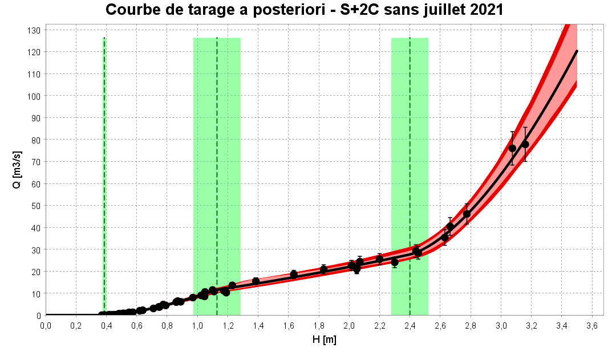
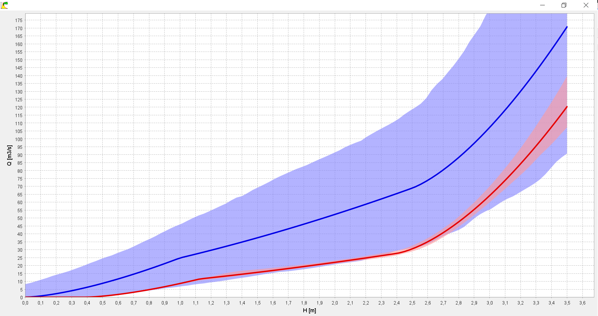
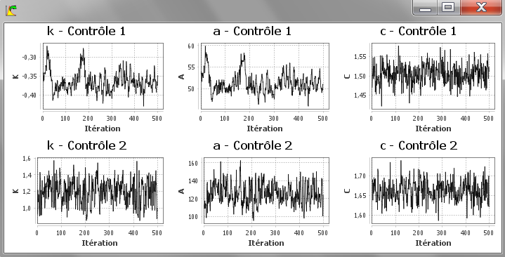
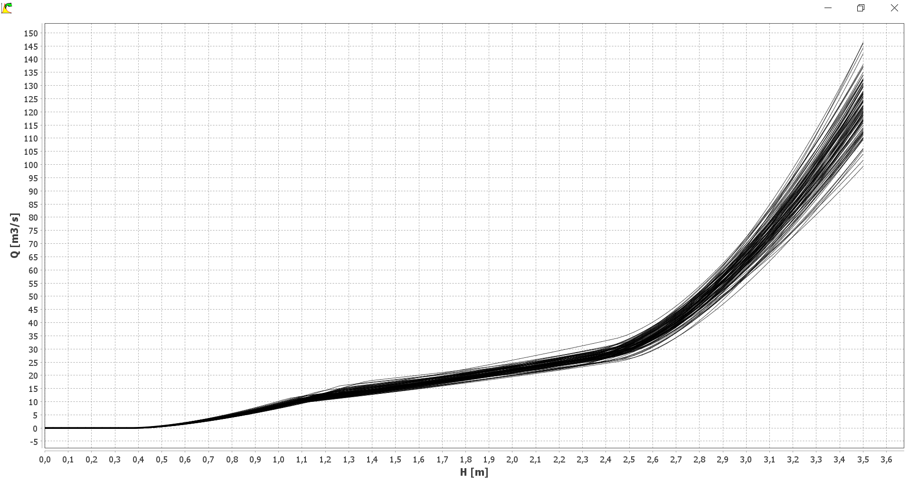

Création d'une courbe de tarage
Vous pouvez créer une nouvelle courbe de tarage de plusieurs façons :
- via le menu Courbe de tarage...Ajouter;
- via le raccourci Ctrl+R;
- en effectuant un clic droit sur le noeud "Courbe de tarage" dans l'arborescence de l'explorateur;
- en cliquant sur le bouton dans la barre d'outils.
Il vous sera demandé de nommer cette nouvelle courbe de tarage, et vous pouvez en saisir une description. La spécification des propriétés de la courbe se fait alors en sélectionnant :
- Une configuration hydraulique (qui détermine l'équation de la courbe et les a priori);
- Un jeu de jaugeages (utilisés pour estimer la courbe);
- Un modèle d'erreur restante (nous conseillons de conserver l'option sélectionnée par défaut).
Vous êtes à présent prêts à lancer le calcul de la courbe de tarage (tous les détails sur les modèles statistiques sous-jacents sont dans ce document). Dans le panneau graphique, définissez une grille de hauteurs comme vous l'aviez fait pour la courbe a priori, puis cliquer sur le bouton Exécuter. Après un calcul qui ne devrait pas excéder quelques dizaines de secondes, le panneau se met à jour comme ceci :

Graphiques
Courbe de tarage a posteriori
Le graphique ci-dessus montre la courbe de tarage a posteriori. Le terme "a posteriori" indique que cette courbe a été estimée en utilisant les jaugeages ("après les avoir observés"), par opposition à la courbe a priori qui n'utilisait aucun jaugeage. Sur ce graphique, les lignes verticales représentent les hauteurs d'activation de chaque contrôle (avec incertitudes). La courbe représentée en noir est la courbe la plus probable a posteriori, nommée pour simplifier courbe maxpost. Autour de la courbe maxpost, l'intervalle en rouge clair représente l'incertitude paramétrique, c'est-à-dire l'incertitude liée uniquement à l'estimation des paramètres de la courbe. L'intervalle en rouge foncé représente l'incertitude totale, c'est-à-dire la combinaison de l'incertitude paramétrique et de l'incertitude induite par l'erreur restante. Il est recommandé de visualiser le graphique aussi en prenant une échelle logarithmique pour les débits, ce qui permet souvent de mieux voir l’articulation des contrôles sur toute la gamme de hauteur d’eau, les écarts relatifs de débit (en %) apparaissant alors avec la même taille quel que soit le débit.
Il est possible d'exporter la courbe de tarage a posteriori en effectuant un clic droit sur la courbe souhaitée dans l'arborescence de l'explorateur, ou via le menu Courbe de tarage...Exporter. Deux formats d'export sont proposés :
- Le format .csv (séparateur: point-virgule). Les colonnes représentent les hauteurs, la courbe maxpost, les limites de l'intervalle d'incertitude paramétrique à 95% et les limites de l'intervalle d'incertitude totale à 95%;
- Le format Barème. Trois courbes sont exportées: la courbe maxpost, et les courbes correspondant aux limites inférieures et supérieures de l'intervalle d'incertitude totale à 95%. Le fichier exporté peut être ré-importé et donc manipulé sous Barème.
Comparaison des paramètres a priori et a posteriori
Il est particulièrement important de vérifier que les paramètres estimés a posteriori sont cohérents avec les hypothèses a priori faites sur les contrôles hydrauliques. Un conflit entre les paramètres a priori et a posteriori doit être interprété comme une alarme sur la validité de la courbe de tarage, c'est à dire de la configuration hydraulique spécifiée. Typiquement, un contrôle important a peut-être été oublié, ce qui force les paramètres à se contortionner au-delà de ce qui est physiquement raisonnable pour coller aux jaugeages.
Le graphique ci-dessous permet d'évaluer comment la connaissance a priori des paramètres (en bleu) a été transformée en connaissance a posteriori (en rouge) par l'information apportée par les jaugeages.

La même information est également disponible sous forme de tableau, avec pour chaque paramètre une comparaison entre les estimations a priori et a posteriori, sous la forme valeur +/- incertitude étendue à 95%.
Comparaison des courbes de tarage a priori et a posteriori
Le graphique permet de comparer les courbes de tarage a priori (en bleu) et a posteriori (en rouge) dans un même graphique. En règle générale, on s'attend à ce que la courbe a posteriori soit beaucoup moins incertaine que la courbe a priori, car elle bénéficie de l'information apportée par les jaugeages.

Simulations MCMC
Le graphique représente les paramètres simulés depuis la distribution a posteriori grâce au simulateur MCMC (tous les détails techniques sont ici). Notez que le graphique ne montre que 500 valeurs simulées, mais en fait 10 000 valeurs ont été initialement générées. Ces 10 000 valeurs initiales ont simplement été post-traitées et réduites à 500 valeurs pour éviter de conserver un nombre de simulations trop important. L'utilisateur peut modifier les options de ce post-traitement via le menu Options...Options MCMC.

Spaghettis
Comme pour la courbe a priori, le graphique représente les "spaghettis" de la courbe de tarage a posteriori : chaque courbe correspond à un tirage MCMC des paramètres k, a, et c de chaque contrôle.
